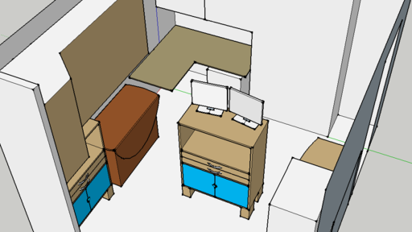
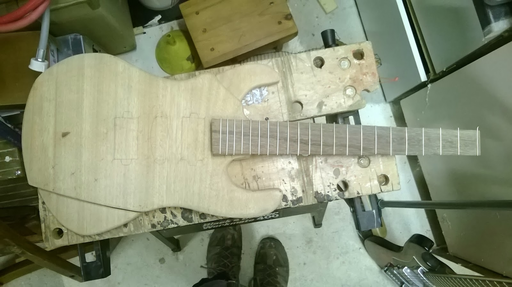

Posts

Moving my PC
The old position of my PC was not ideal. It was in the far corner of our living room, making plenty of noise to irritate whoever was watching TV at the time. It was a relief when it turned off. So I set out to:
* Get my PC out of the living room
* Make the arrangement in its new home as unobtrusive as possible

Continuing an old project
It's been a long time, but I've started working on an old project again: my electric guitar. I stopped back in late 2009 or early 2010 - I just didn't have the tools, skills or motivation I needed to continue. Maybe now I do. All I know is that I'm getting sick of looking at the parts in my garage whenever I work on something else.